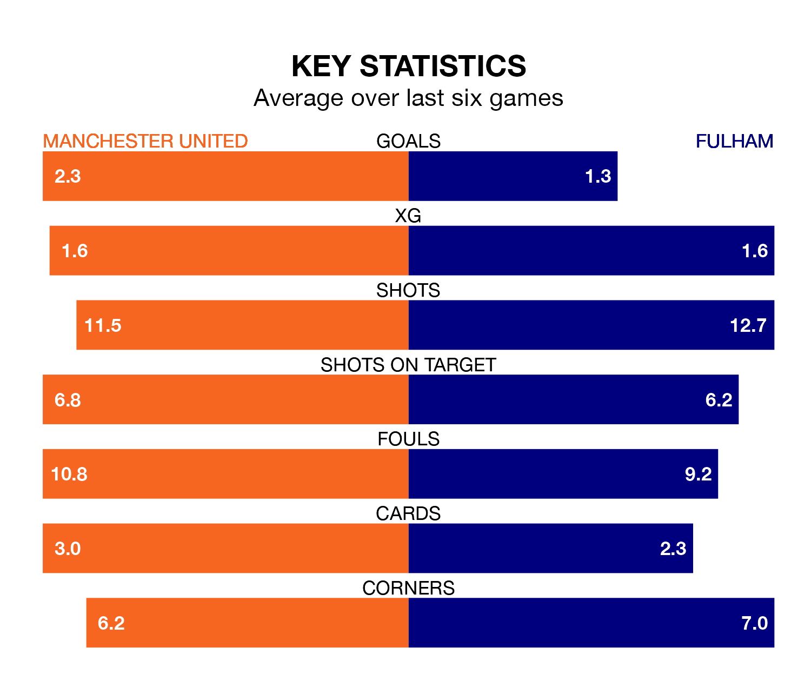

Manchester United are heavy favourites to keep all three points at home in Saturday's kick-off against Fulham.
The Red Devils, who sit sixth in the Premier League with 25 games played, are priced at 1.5 to seal victory at Old Trafford.
Sitting seven places and 15 points behind them in the table, Fulham are 5.0 to win with *Betting Company*, while the draw is at 4.4.
In the last 10 years, United and Fulham have played each other on eight occasions. United won seven of them and they drew once.
On average, the Red Devils scored 2.2 goals and the Cottagers 0.8 in those matches.
Their last meeting was on November 4, when United won 1-0 away.
In André Onana, United can rely on one of the league's safest pair of hands. He has kept seven clean sheets in his 25 appearances this season, and only two other 'keepers – Everton's Jordan Pickford and Arsenal's David Raya – have been able to prevent the opposition scoring on more occasions in the Premier League.
In Fulham's net, Bernd Leno has six clean sheets in 25 games. He has conceded a goal every 63 minutes, 20% more often than the 73 minutes between goals for Onana Onana.
With 34 goals in 25 games so far this season, the Cottagers are scoring at below the league average rate with 1.4 goals per game. And they are conceding at an average rate, letting in 41 goals at a rate of 1.6 per game.
The Red Devils are also below average scorers, with 1.4 goals per game, compared to a league average of 1.6. They have also conceded 1.4 goals per game.
The hosts are in good form in the Premier League, with four wins and a draw from their last six games.
With two wins and two draws over that period, the away team's form is worse – they have taken eight points from 18, compared to United's 13.
United's last match was on Sunday, a 2-1 win against Luton Town, with Rasmus Højlund getting the goals for the Red Devils.
Fulham lost 2-1 against Aston Villa last time out, on February 17, with Rodrigo Muniz on the scoresheet.
Updated: 12:18 (UTC), 19/02/24